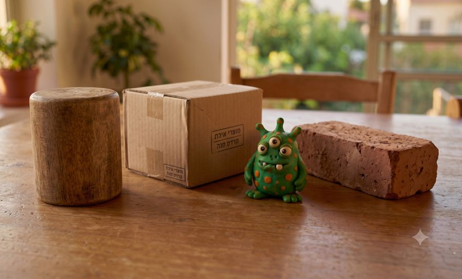
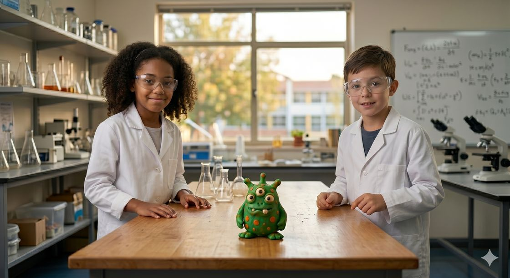

כל הכבוד שניסיתם, זה חשוב מאוד!
כדי לחזק את ההבנה נמשיך לתרגל —
4 שאלות פשוטות יותר
וכבר בהתחלה יש רמז! ענו נכון על 3 שאלות ומעלה כדי להתקדם.

איזה מהגופים שבתמונה אינו בעל צורה הנדסית מוגדרת?

שירלי: כדי למדוד נפח של גוף ללא צורה הנדסית מוגדרת, יש להשתמש בשיטת דחיקת המים.
תום: כדי למדוד נפח של גוף ללא צורה הנדסית מוגדרת, יש להשתמש במאזניים וסרגל.
מי מהילדים צודק? תום או שירלי?
כשמודדים נפח בשיטת דחיקת המים משתמשים ב- .
במפעל לייצור מתכות הכניסו גליל מתכת לכלי מלא במים כדי למדוד את הנפח שלו בשיטת ההצפה.
נפח המים שגלשו מהכלי היה 760 מ"ל.
מה נפח הגליל?
יופי של עבודה!
נחזור ל-2 תרגילים ברמת קושי גבוהה יותר.
ברור לי שתצליחו!
בתמונה א' ניתן לראות את נפח המים במשורה לפני שהכניסו אליה את בובת המפלצת.
בתמונה ב' ניתן לראות את נפח המים במשורה אחרי שהכניסו אליה את בובת המפלצת.
סמנו בתמונה ב' את האזור בו ניתן לראות שגובה המים במשורה עלה.
 תמונה א'
תמונה א'
 תמונה ב'
תמונה ב'
מעצבת תכשיטים צריכה לדעת מה נפחו של חרוז קטן.
מכיוון שקשה למדוד חרוז אחד במדויק, היא הכניסה למשורה 3 חרוזים זהים.נפח המים לפני המדידה: 100 מ"ל. נפח המים לאחר הכנסת החרוזים: 130 מ"ל.
מהו נפחו של חרוז אחד?